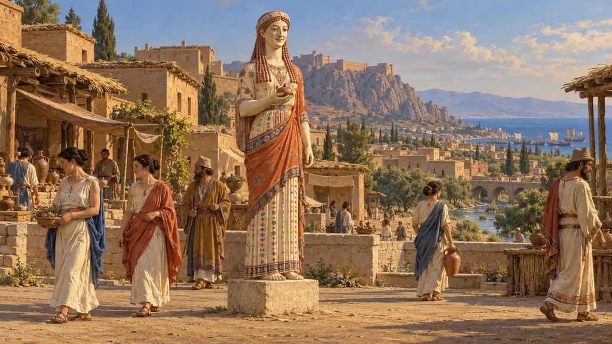
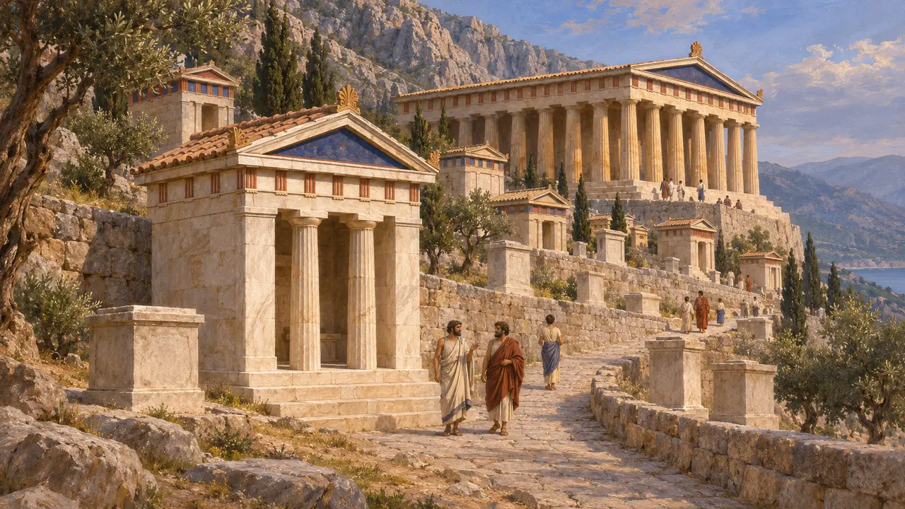
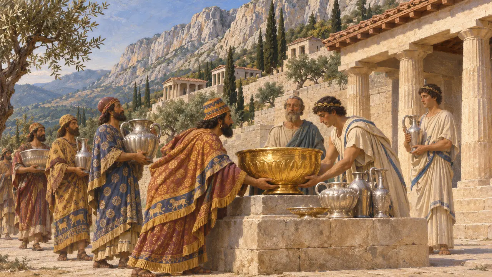
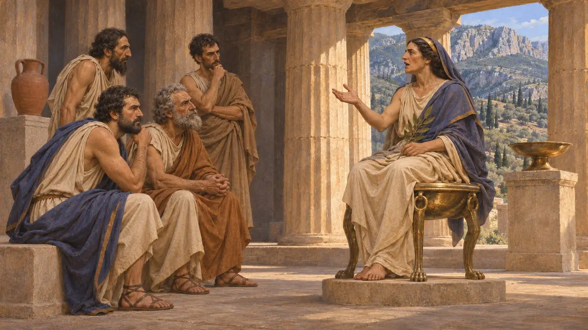
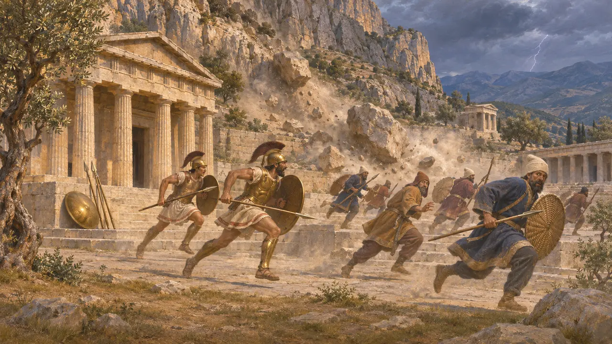
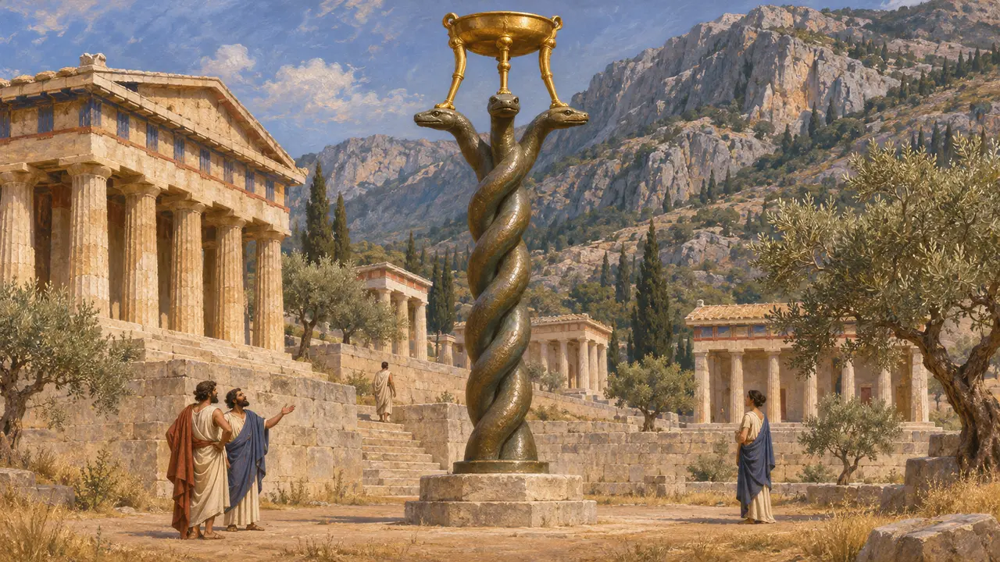

Дельфы
Святилище и оракул Аполлона у подножия Парнаса, в Фокиде, Средняя Греция
В игре: Уровень 11: Финал
Дельфы были самым знаменитым оракулом греческого мира: здесь жрица Аполлона, пифия, отвечала на вопросы городов и царей. Крёз Лидийский вопрошал оракул, воевать ли с Киром, а Афины и другие греческие города — как встретить грядущее вторжение Ксеркса. Ни один персидский текст не упоминает Дельфы, поэтому об их связях с Лидией и Персией известно из греческих авторов, прежде всего Геродота, и из остатков святилища.
В игре: Игра описывает Дельфы как оракул, к которому обращались греки и лидийцы. Это верно, хотя отражает лишь греческую сторону: ни один персидский документ не упоминает ни Дельфы, ни обращения персов к оракулу.

Святилище Аполлона
Свидетельства эпохиДельфы располагались на крутых склонах горы Парнас над Коринфским заливом. Французские раскопки, ведущиеся с 1892 года, открыли террасный священный участок Аполлона. На нём находятся храм, сокровищницы, возведённые греческими городами для хранения их приношений, и множество постаментов для посвящений. Сокровищница афинян, восстановленная из подлинных мраморных блоков в начале XX века, до сих пор стоит у Священной дороги.
École française d'Athènes, Fouilles de Delphes; M. Scott, Delphi, 2014

Крёз испытывает оракул
Античное свидетельствоГеродот пишет, что Крёз Лидийский испытал несколько оракулов, спросив, чем он занят в назначенный день, и Дельфы ответили верно. Тогда он послал туда богатые дары из золота и серебра, часть которых Геродот видел своими глазами. Услышав, что, начав войну с персами, он разрушит великое царство, Крёз в 540 г. до н. э.-х годах до н. э. напал на Кира и потерял собственное. Геродот добавляет, что бог позднее сказал: истолковать ответ неверно Крёз мог лишь по своей вине.
Herodotus 1.46-56; Herodotus 1.90-91

Оракулы накануне нашествия Ксеркса
СпорныйГеродот пишет, что Пифия сперва велела афинянам бежать на край земли, а затем заговорила о деревянной стене, которая их спасёт, и о божественном Саламине. Фемистокл доказывал, что под стеной подразумевается флот. Дельфы также отговорили Аргос и Крит от участия в обороне. Историки спорят, когда были даны эти оракулы — возможно, в 481 году до н. э. или раньше. Спорят они и о том, не отшлифовали ли стихи уже после победы и не говорит ли осторожность Дельф о том, что там ожидали победы Царя.
Herodotus 7.140-143; Herodotus 7.148; Herodotus 7.169

Нападение на Дельфы
Позднейшая легендаГеродот рассказывает, что Ксеркс послал войска разграбить Дельфы. Священное оружие само собой оказалось вынесено из храма, ударили молнии, с Парнаса обрушились скалы, а двое местных героев обратили персов в бегство. Эта история читается как доказательство покровительства бога, и многие историки сомневаются, что серьёзное нападение вообще было. В другом месте Геродот вкладывает в уста Мардония слова о том, что оракул предрёк гибель персам, которые разграбят Дельфы, и потому они туда не пойдут.
Herodotus 8.35-39; Herodotus 9.42

Змеиная колонна
Свидетельства эпохиПосле Платей в 479 году до н. э. греки установили в Дельфах золотой треножник на бронзовой колонне из трёх переплетённых змей. Фукидид пишет, что Павсаний Спартанский сначала велел вырезать на ней стих со своим именем, а спартанцы заменили его списком сражавшихся городов. Позднее колонну перевезли в Константинополь. Её нижняя часть с названиями 31 города на змеиных кольцах до сих пор стоит в Стамбуле.
R. Meiggs and D. Lewis, Greek Historical Inscriptions, 1969, no. 27; Herodotus 9.81; Thucydides 1.132
Источники
- Herodotus, Histories, books 1, 7, 8 and 9
- Thucydides 1.132
- R. Meiggs and D. Lewis, Greek Historical Inscriptions, 1969
- M. Scott, Delphi: A History of the Center of the Ancient World, 2014
- H. W. Parke and D. E. W. Wormell, The Delphic Oracle, 1956